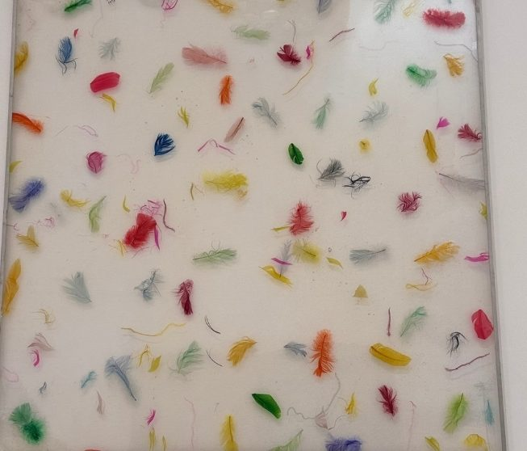

ŒUVRE 01KINESTHÉSIELa perception d'un mouvement par le corps — même devant une image fixe. Tes neurones miroirs simulent la trajectoire d'un objet avant qu'il ne bouge. (+ barognosie : le poids, la résistance de l'air.)
L'œil voitDes plumes pastel figées en suspension derrière une vitre.
Consigne« Fixe une seule plume, 10 secondes, sans bouger. »
MécanismeTon cerveau « hallucine » la chute et l'apesanteur. Un mouvement là où rien ne bouge.